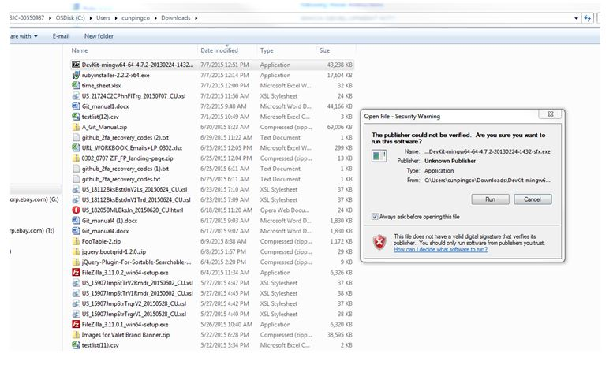
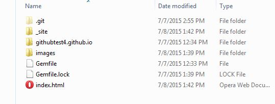
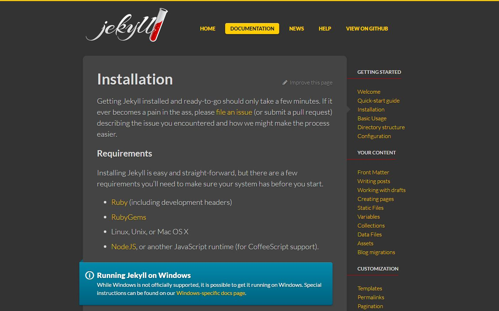
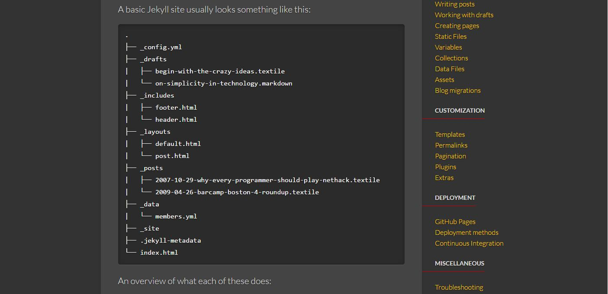
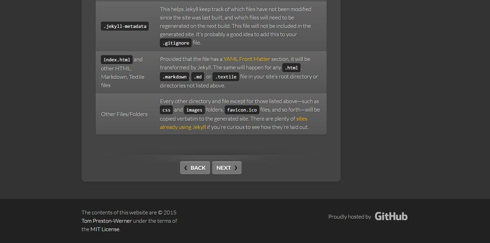
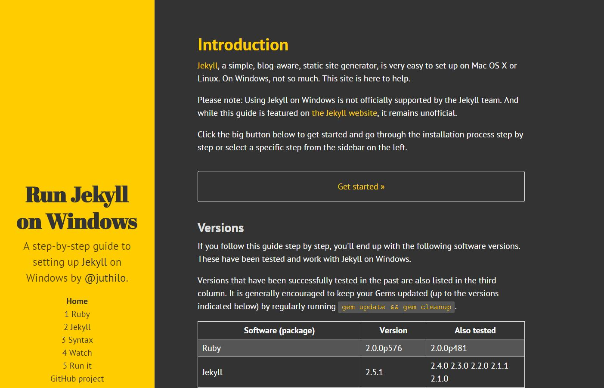
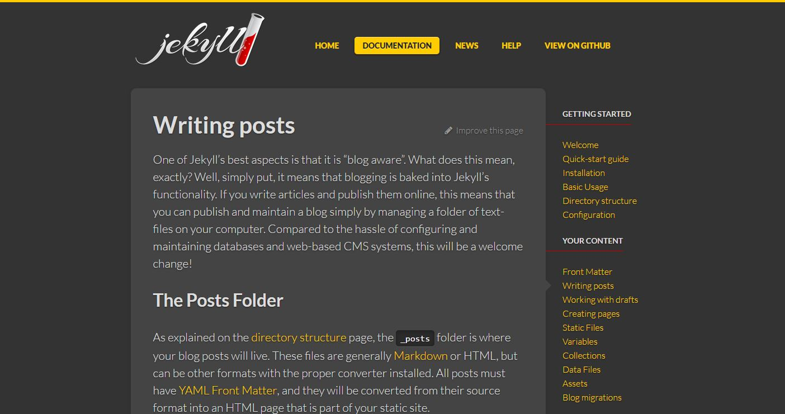
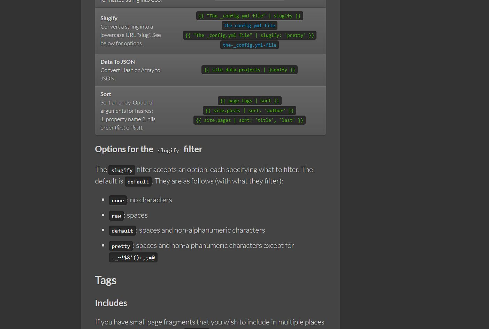
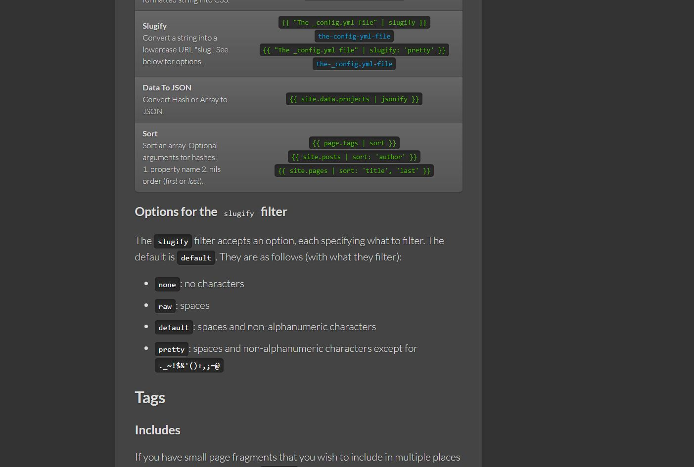
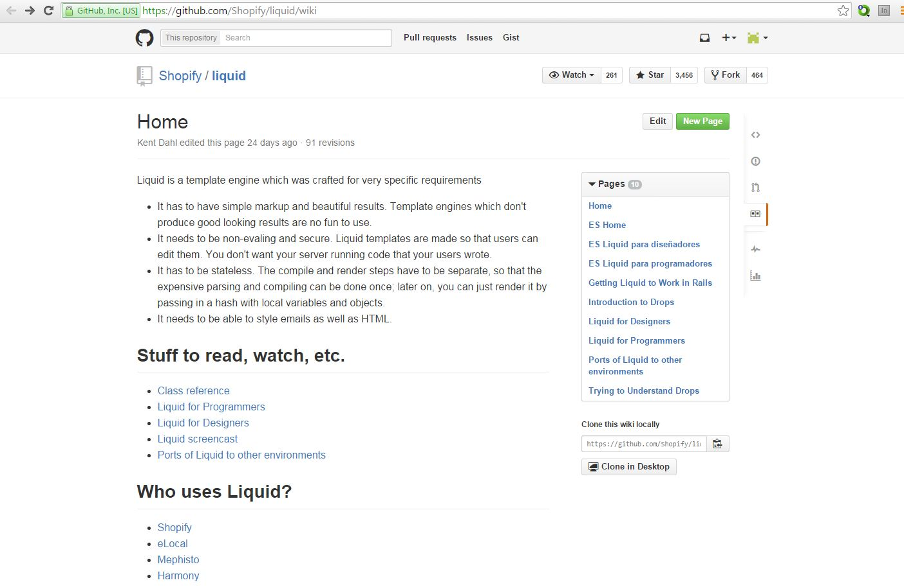

Checking for Ruby
In the image above, windows dos says 'ruby' is not recognized... So you do not have ruby on your machine, and you must install it.
Download Ruby
Gem Install Bundler
In the above referenced install we received an install error, telling us we need to install the DevKit.
Installing Devkit
Download DevKit.zip. Extract it to a permanent location. In this case, we extracted it off the c: drive, c:\DevKit. Change to the DevKit subdirectory.

Make changes to the config.yml file in DevKit:
Run ruby dk.rb install in DevKit:
Change directory to GitHubPages4 and run bundle install
Run bundle exe jekyll serve
Index page must be built
The index page must be built in order for the page to render when the Jekyll server runs. If it is not built, you will get a "Forbidden" error.
What Is Jekyll?
Quick Start Guide
Jekyll Installation
Jekyll Basic Usage
Jekyll Directory Structure
 Jekyll On Windows

The Jekyll documentation refers to Julian Thilo's Run Jekyll on Windows website. However, after reading the documentation there, if you have followed the GitHub and Jekyll instructions on GitBash, you should be able to successfully run the Jekyll server.
If you want to set up code highlighting on windows, then you should follow the instructions on the website and set up Python and pip.
Jekyll Front Matter
Digression To YAML
Jekyll Front Matter Continued
Jekyll Writing Posts
Digression To Templates
 

Digression to Liquid

Writing Posts Continued

Creating Pages
GitHub Pages